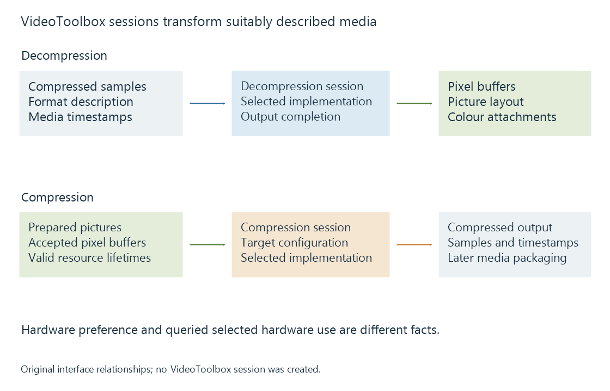

Apple VideoToolbox
VideoToolbox provides Apple-platform compression and decompression sessions whose selected implementation, pixel buffers and completion behavior define the media-processing path.
VideoToolbox supplies low-level video compression and decompression services on Apple platforms. Applications configure sessions, submit suitable media data and receive their outputs.
The selected session implementation and media configuration determine the actual path. The framework name alone describes the interface being used.
A session has defined media input and output
A decompression session accepts suitably described compressed samples and produces decoded picture data. A compression session accepts suitable pictures and creates compressed output.
Apple's media stack uses Core Media sample/format/timing objects and CoreVideo pixel buffers around those roles.

| Object or stage | Meaning to retain |
|---|---|
| Compressed sample | Encoded data with its media description and timing |
| Decompression session | The selected reconstruction path |
| CVPixelBuffer | Picture storage, layout and relevant attachments |
| Compression session | The selected new-output encoding path |
| Compressed output | Data that still needs the intended packaging/delivery |
The objects keep the media operation and its surrounding timing/storage context together.
Hardware preference and selected execution are different facts
Apple provides controls for hardware selection and properties for observing the selected path.
Its decoder documentation describes a “require hardware” specification that can make creation fail when a suitable hardware decoder cannot be provided. An encoder can be configured to enable hardware, then its actual selected hardware use can be queried through kVTCompressionPropertyKey_UsingHardwareAcceleratedVideoEncoder.
An original interpretation table illustrates the distinction:
| Request/result context | What has been established |
|---|---|
| Hardware allowed or enabled | A selection preference/permission |
| Session successfully created | An accepted session configuration |
| Actual selected-use property reports hardware | Hardware use for that queried session |
| Required hardware cannot be supplied | Creation fails under that requirement |
The table contains no measured session. It explains why a request and an observation should not be substituted for each other.
Pixel layout and interpretation travel together
A CVPixelBuffer describes picture storage, including dimensions, pixel format and row layout. Attachments can carry colour interpretation.
A downstream processing stage needs the actual pixel layout and the meaning of its values. An encoder configured for another layout can require a supported conversion.
For a native Emby playback or conversion comparison, preserve the input/output media configuration alongside the selected platform path. That identifies whether a visible change belongs to decoding, colour processing, scaling or output encoding.
Completion governs reuse
Compression and decompression can involve asynchronous work. Output callbacks and session operations have their own completion contracts; returning from submission does not grant unlimited permission to overwrite the input storage.
A decoded pixel buffer used by another GPU operation must likewise remain valid until that operation is finished with it. Metal integration provides the picture-processing part of that route.
See Also
- Apple silicon media engines
- Metal for video processing
- Hardware decoding and software decoding
- Hardware encoding and software encoding
- How media APIs connect applications to hardware
- Native media players and their playback engines